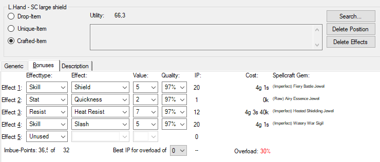

Item - Bonuses (items created by the player)

Here, items desired by players that set the desired bonuses are set.
Effect type:
The spell effects are divided into different groups, which can be set
here.
Effect:
The spell effect is set here.
Value:
The value of the ban spell effect is set here.
Quality:
The quality of the effect-related Bann spell jewels is set here. This
value is actually only of interest to the bane wizard himself. It
determines how well an object can be overloaded.
IP (Imbue Points):
The Imbue points needed by the Bannzauber Jewel. There are 2 different
display modes here. In the preset mode, the full imbue points are always
displayed. In the options dialog
you can still switch to half IP. In this mode, only the effect shows the
full IP that most people need. For the remaining effects, only half the IP
is displayed. If you add up the IP in this mode, you get the total IP
required by the item.
Wdhl .:
Here the banner enchantor sets how often he has to repair the
corresponding jewel in order to reach the desired quality. This field is
only visible in Crafter mode.
Cost:
The material costs of the required Bannzauber jewels.
Bannzauberjuwel:
Here the name of the band magic jewel required for the desired effect is
displayed.
Restoring ...
Opens the Recovery dialog. Only visible
in Crafter mode.
Done
Here the banner wizard can set whether he has already finished the jewels.
Is useful if he has to interrupt work in between. Only visible in Crafter
mode.
Imbue points:
Here the required and the existing imbue points are displayed.
Ideal IP for overloading
Here the ideal IPs are displayed with the set overload. This value
indicates how many IPs the still empty effects should ideally require.
Overload:
Here is whether the item is overloaded,
and if so, by what chance it can be successfully overloaded.